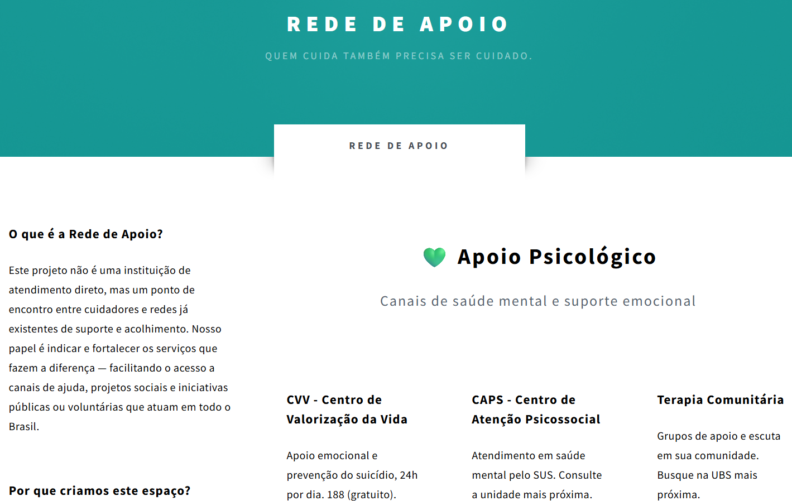
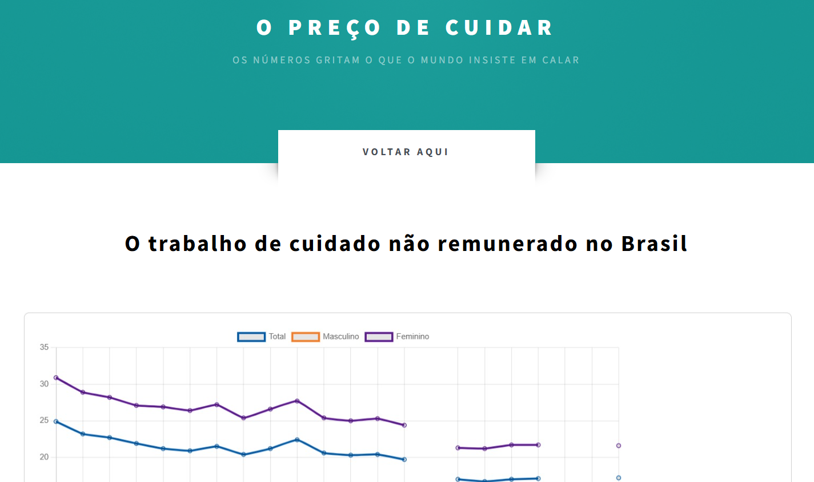
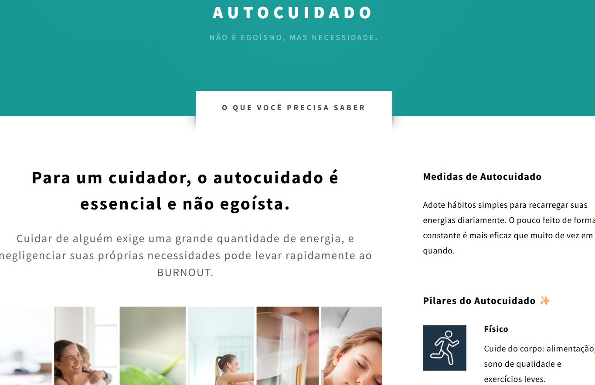

Edenise Alves
Professora de Física e Gestora. Defende que o papel do educador é um cuidado pedagógico e humano para o aluno. Enfatiza que quem cuida precisa se cuidar, como o "bicho-preguiça" (calma por fora, atenta por dentro).
Os relatos que inspiram e transformam.

Rangel Nunes
Diretor de Ensino e professor de Informática, relata como a profissão o escolheu. Enfatiza a responsabilidade da escola em formar o aluno integralmente, não apenas em conteúdo.
Professora de Física e Gestora. Defende que o papel do educador é um cuidado pedagógico e humano para o aluno. Enfatiza que quem cuida precisa se cuidar, como o "bicho-preguiça" (calma por fora, atenta por dentro).

Chefe do Departamento de Apoio ao Ensino e professor. Aborda a total responsabilidade com os alunos e o dilema de tentar formar aqueles que enfrentam problemas pessoais graves.

Psicóloga Escolar focada em saúde mental para a aprendizagem. Discute a importância de agir com responsabilidade ética e usa a metáfora da máscara de oxigênio para o autocuidado.

Técnica de Enfermagem com formação em Saúde Escolar. Defende o cuidado integral e a promoção da saúde, alertando sobre o risco de mascarar problemas graves apenas com medicação.

Tradutor Intérprete de Libras. Sua missão é romper barreiras de acesso para o aluno surdo. Ele relata como o vínculo se estende para o apoio pessoal e familiar.

1. Trajetória e Contribuição na Instituição
Rangel Nunes é professor na área de informática e atua como diretor de ensino do campus. Ele explicou que o diretor de ensino gerencia toda a parte de ensino,
seja no nível médio, técnico, superior ou pós-graduação, e lida com questões de alunos, pais, responsáveis, professores e técnicos administrativos. A diretoria
de ensino supervisiona três departamentos (Apoio ao Ensino, Ensino Superior e Ensino Técnico) e suas respectivas coordenações, incluindo biblioteca, controle
acadêmico (CCA), pedagogia, setor de saúde e multimeios.
2. A Vocação para Cuidar
Ele revelou que se formou com o sonho de ser analista de sistemas, profissão que exerceu anteriormente, e que buscou a estabilidade por meio de concursos.
Ele acabou passando para professor no IFPI, onde já havia sido aluno. Rangel Nunes confessou que era mais tímido e não se via lecionando, mas, ao começar,
identificou-se muito com a profissão. Ele descobriu que o prazer não estava na produção de software ou site, mas sim em ensinar. Sua conclusão é que, na verdade,
“a profissão me escolheu. Não foi o contrário”. Ele afirmou que não tem vontade de sair e que quer “ser professor pelo resto da vida”.
3. Sentimento de Responsabilidade e Propósito
O diretor de ensino enfatizou a importância de ter responsabilidade, pois isso é o que move os professores e técnicos. Ele vê o professor que se dedica e repõe aulas como um ato de cuidado.
Ele mencionou que, para cumprir o papel, às vezes precisa “deixar de ter o maior convívio com a família, para poder me preocupar com aquilo dali".
Rangel destacou que a postura dos educadores transmite segurança aos pais, citando que a mãe de um aluno disse: “ah, pois você está em boas mãos, porque eu conheço a postura dele”. Ele explicou que o trabalho disciplinar é, na verdade, um ato de preocupação. Ele afirmou que “se fosse só pelo lado disciplinar, a gente já tinha expulsado um monte de aluno aqui”, pois o foco é “só tentar mudar o cara” e ver o “lado humano por trás disso”.
4. Vínculos que Permanecem
Rangel Nunes relembrou uma história do início de sua carreira no curso PROEJA (jovens e adultos). Ele precisou dar uma disciplina nova, e a coordenadora explicou que o objetivo era ensinar
adultos a usar a internet. Como o laboratório estava sem internet, ele usou seu próprio modem para que os alunos pudessem praticar. Um desses alunos era um padeiro desempregado que precisou
abandonar o curso para sustentar a família. Na noite em que o aluno saiu, ele enviou uma mensagem a Rangel: “professor, infelizmente eu não vou poder continuar no curso, porque eu arranjei um
trabalho, eu tava desempregado, preciso sustentar a minha família”. O aluno concluiu a mensagem com a frase: “eu queria fazer uma homenagem pro senhor, de uma forma que o senhor me ensinou” –
enviando o e-mail como prova de seu aprendizado.
5. O Cuidado Consigo Mesmo
Rangel Nunes acredita que a recíproca (receber cuidado) “não é verdadeira” na maior parte do tempo. Ele citou a resistência em expulsar alunos problemáticos,
explicando que, apesar da pressão, ele não descarta o problema, pois essa não é a função da escola. Ele lamentou a falta de reconhecimento por parte de colegas,
que o criticam quando ele tenta descansar: “nossa, você aqui”. Ele recebe mensagens não urgentes de alunos em domingos ao meio-dia. Ele expressou que o mais cansativo
é que “poucos momentos acontecem das pessoas pararem em reconhecer o que a gente faz”. Para ele, o acolhimento viria no simples gesto de dizer: “não precisa vir hoje, relaxa,
já vem de manhã, não vem de tarde, e tal”.
6. A Necessidade de Apoio Recíproco
Ele contou que antes tinha dificuldade em se desligar do trabalho, dedicando os finais de semana a ele, mas hoje tenta dosar, atendendo apenas urgências.
Ele só atende urgências e ignora pedidos não urgentes no domingo, pois percebeu que “se a gente não desligar as pessoas não desligam da gente”. Rangel disse que a reflexão que
mais faz é: “que saudade do tempo que eu podia acordar sem nenhuma preocupação”. O aprendizado que a função lhe trouxe foi ser mais resiliente, aceitando que “vão criticar, se eu tomar
uma decisão correta, vai ter alguém que vai criticar”. O desafio, segundo ele, é tentar “dosar, ter esse autocuidado”.
7. Mensagem para Outros Cuidadores
Rangel fez uma auto-reflexão, reconhecendo que seu principal defeito é esperar um retorno, mesmo que seja apenas que “faço a comida não reclama que tá sem sal”. Ele aconselhou a si
mesmo e aos outros a continuarem cuidando, mas a “tentar ter um pouco de cuidado comigo”. Ele citou sua experiência de problemas de saúde, que o levaram a adotar atividade física,
mudança na alimentação e atendimento psicológico. Ele fez uma reflexão sobre a necessidade de ter esse cuidado: “entender que você é um ser humano, que você tem seus limites”

Canais de suporte, recursos psicológicos e materiais para quem busca ajuda imediata..

Dados e gráficos que revelam o impacto da sobrecarga e a invisibilidade do cuidado no Brasil.

Dicas e ferramentas essenciais para o bem-estar e o equilíbrio mental de quem se dedica ao próximo.